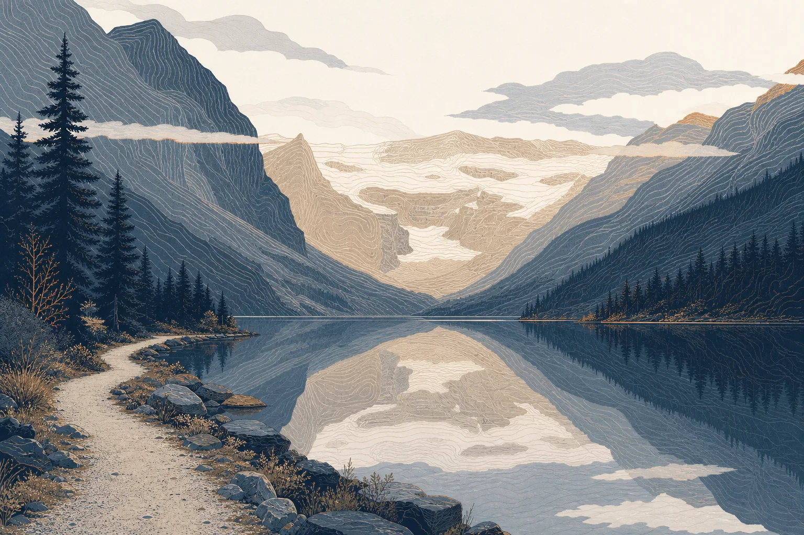
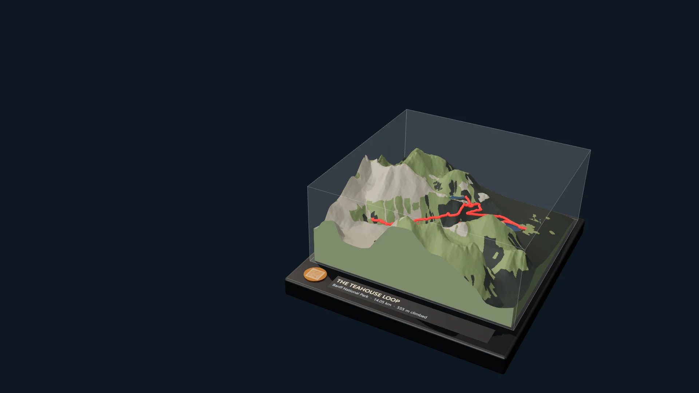
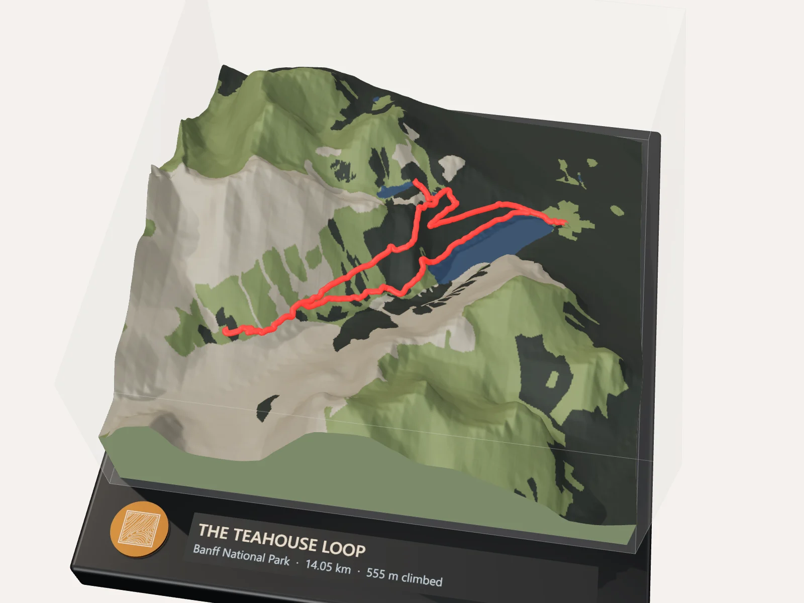
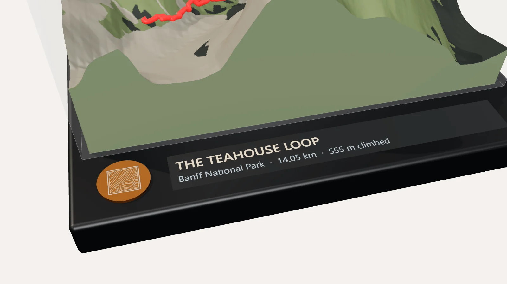
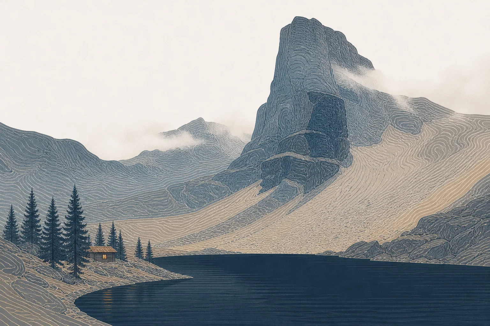
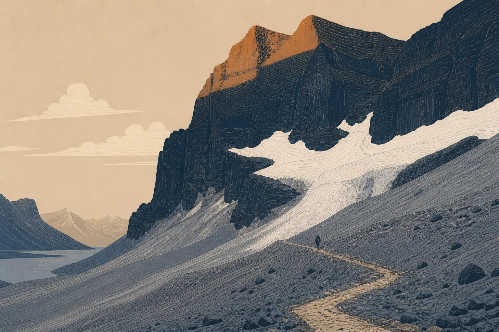
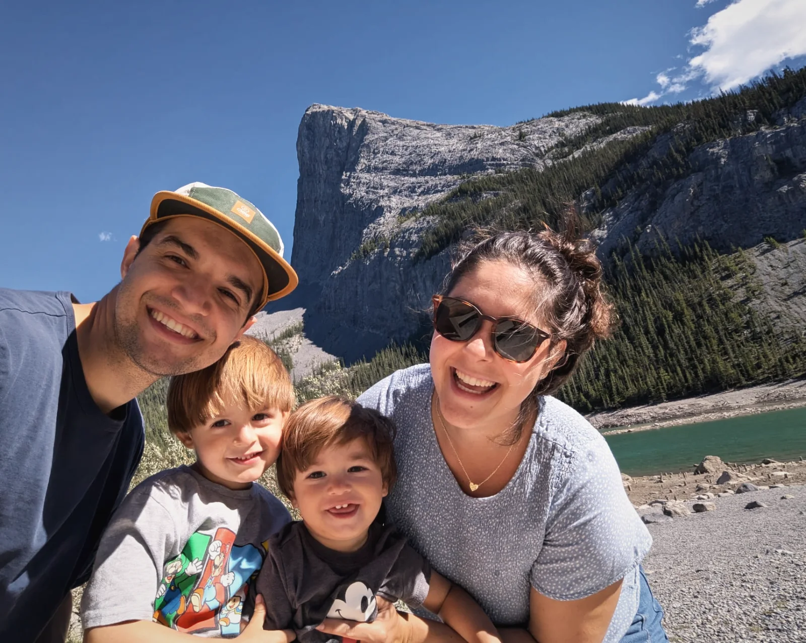
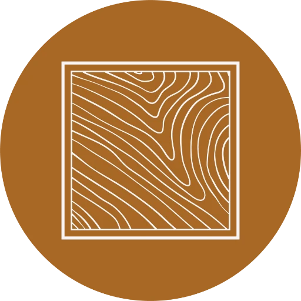

Lake Louise Lakeshore
km 0 · 1,740 m
Start and finish. The flattest line on the map.

We print the one you walked, mountain and all.
14.05 km from Lake Louise to two teahouses and back, raised in red over the real terrain. Black frame, acrylic lid.
Order your map
Every map is built from the GPX of your hike and printed at 250 mm square. This one covers 8.8 km of the Rockies around Lake Louise.

The places you rested sit where they were, at the height they were. Walk the Teahouse Loop sideways:
Illustrations are artistic impressions. Distances and heights are from the trail's GPX.

km 0 · 1,740 m
Start and finish. The flattest line on the map.

km 3.6 · 2,124 m
The high point of the loop. The steepest red on the print.

km 8.2 · 2,058 m
Moraine and ice at the head of the valley, printed as scree.
km 14.05 · 1,740 m
555 m climbed, all of it on the map.

We’re a family of four, and most weekends you’ll find us somewhere between the city and the Divide: a lakeshore in Kananaskis, a teahouse above Lake Louise, a ridge we promised the kids was almost there.
Those days go by fast. The kids grow, the trails blur together, and the photos stay on our phones. So we started printing them: the real mountain, at its real height, with the exact line we walked raised in red.
Maps & Memories is that, for your trail.

Designed, 3D-printed and framed by our family in Calgary, Alberta. Every step, start to finish.See you out there.
Drag the GPX from Strava, komoot, Garmin or AllTrails onto the map. We fetch the real terrain and land cover, and your mountain rises.
Our Etsy shop opens soon. Copy your trail and settings now, and paste them into your order when it does.
Etsy shop opening soon